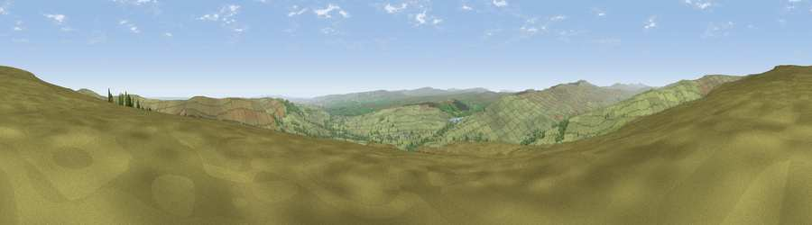

Viewpoint near Middleton-in-Teesdale
#7340 in England · top 11% of its area beats it · near Middleton-in-TeesdaleWhere it is
The exact computed spot (NY 96575 27625). Click the marker for map links.
The view, rendered

A 360° render of this exact spot computed from the terrain model, tree cover and land cover — summer colours, afternoon light, calibrated against photographs of famous viewpoints. Real trees, hedges and buildings will differ in detail.
The panorama
Grey silhouette: terrain skyline in each direction (720 bearings, Earth curvature and refraction included). Dashed green: skyline with trees (+15 m) and buildings (+8 m) as obstacles. Blue strip: how far the ground is visible on each bearing.
Where the view opens
Wedge length = distance to the farthest visible ground on that bearing (vegetation-aware). Rings at 10, 25 and 50 km.
What fills the view
94% grassland · 5% woodland ·
Angular shares of the visible panorama (visual magnitude), not map area. Landscape diversity 0.12 (0–1 Shannon).
Key numbers
More beautiful places nearby
The staircase of upgrades: each row has a higher view potential than everything closer. Driving times are estimates from straight-line distance, calibrated against real road routing — check an actual route before setting out.
| Place | Direction | Drive | Score |
|---|---|---|---|
| Viewpoint near Middleton-in-Teesdale | NNW · 1 km | ~3 min | 70.5 |
| Viewpoint near Eggleston | SE · 6 km | ~13 min | 76.0 |
| Great Dun Fell | W · 26 km | ~42 min | 77.8 |
| Little Dun Fell | WNW · 27 km | ~43 min | 78.4 |
| Cross Fell | WNW · 29 km | ~45 min | 78.7 |
| Fell Head | SW · 43 km | ~63 min | 78.8 |
| Calders | SW · 43 km | ~63 min | 79.0 |
| Viewpoint near Watermillock | W · 51 km | ~72 min | 82.6 |
54.64372, -2.05459 · source: screening · position refined by local search. Computed location — check access rights before visiting.